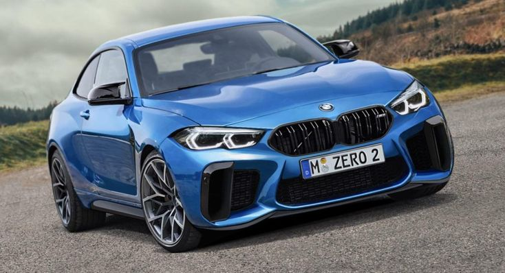

What is special about BMW X5?
2024 BMW X5 Luxury Midsize SUV | All Models & Pricing
Unleash the power of the BMW X5 M Competition – a driving experience unlike any other SUV on the road.
With an exceptionally powerful engine enhanced by the latest 48V mild-hybrid technology, engineering
upgrades by BMW M, and sportier looks as standard, it's the most powerful member of the X5 family.
Whether you're seeking thrills or comfort, the 2024 BMW X5 sDrive40i and X5 xDrive40i deliver it all.
Start shopping for this versatile midsize Sport Utility Vehicle online today, or contact your local BMW
Center to see one in person.
What is BMW famous for?
Brands & Services
With its brands, the BMW Group is one of the world's leading premium manufacturers of automobiles and motorcycles and also provides premium financial and mobility services.
Which country is famous for BMW?
BMW - Wikipedia
Bayerische Motoren Werke AG, abbreviated as BMW (German pronunciation: [ˌbeːʔɛmˈveː]), is a German multinational manufacturer of luxury vehicles and motorcycles headquartered
in Munich, Bavaria, Germany.